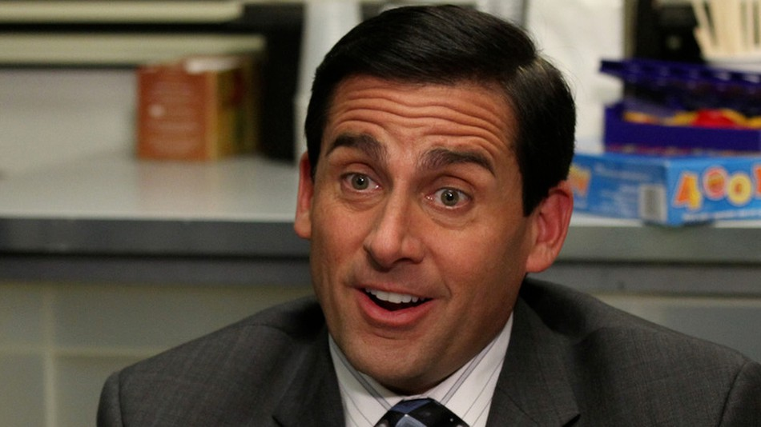
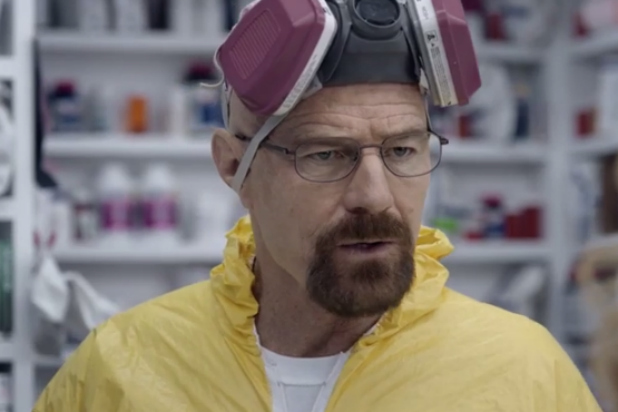

If you click on the "Hide" button, I will disappear.
Michael Jordan is the greatest basketball player of all time. He wore number 23 for the Chicago Bulls for the majority of his professional basketball career. He had a very brief hiatus from professional basketball, during which time he wanted to try his hand at baseball, and he played, some might say rather poorly, for the Major League Baseball team, Chicago White Sox. After performing exponentially worse at baseball than he had at basketball, he took some time off, but eventually returned for a few more seasons with the Chicago Bulls. Once he formally retired from professional basketbell, he eventually would return, but for the Washington Wizards. Even as an older player he was still a top performer due to his pure athleticism and his drive to win. To this day, he is still considered by most fans of the sport to be the greatest to ever play the game, and by many to be the greatest overall athlete of all time.
Michael Scott is the greatest regional manager of the paper company Dunder Mifflin, now a subsidiary of Sabre Inc., owned by former Dunder Mifflin CFO, David Wallace. Michael started as a salesman for the company, but after years of stellar performance, former branch manager, Ed Truck, now deceased, promoted Michael to Regional Manager of the Scranton, Pennsylvania branch. During his tenure at the company, the branch went through many ups and downs, potential downsizing was often considered, and many employees had some poor interpersonal relationships with one another. At the end of the day, however, the branch succeeded and most of the employees considered Michael to be a great boss, some might even say "the best boss I ever had".
Walter White was a former Chemistry at Albuquerque High School in Albuquerque, New Mexico. He studied Organic Chemistry at the University of New Mexico, and was considered by many of his professors and colleagues to be one of the most brilliant chemists of their time. During his time at University, he studied along Elliot Schwartz, with whom he even cofounded the company "Gray Matter". Elliott and his wife Gretchen went on to turn the company into a multibillion dollar firm, but Walter left shortly after its inception to start a family with his wife, Skyler. Walter would eventually leave the teaching field and venture into other lines of work, including ownership and operation of a carwash. The last few years of his life were very disturbing in nature, to him and those around him.